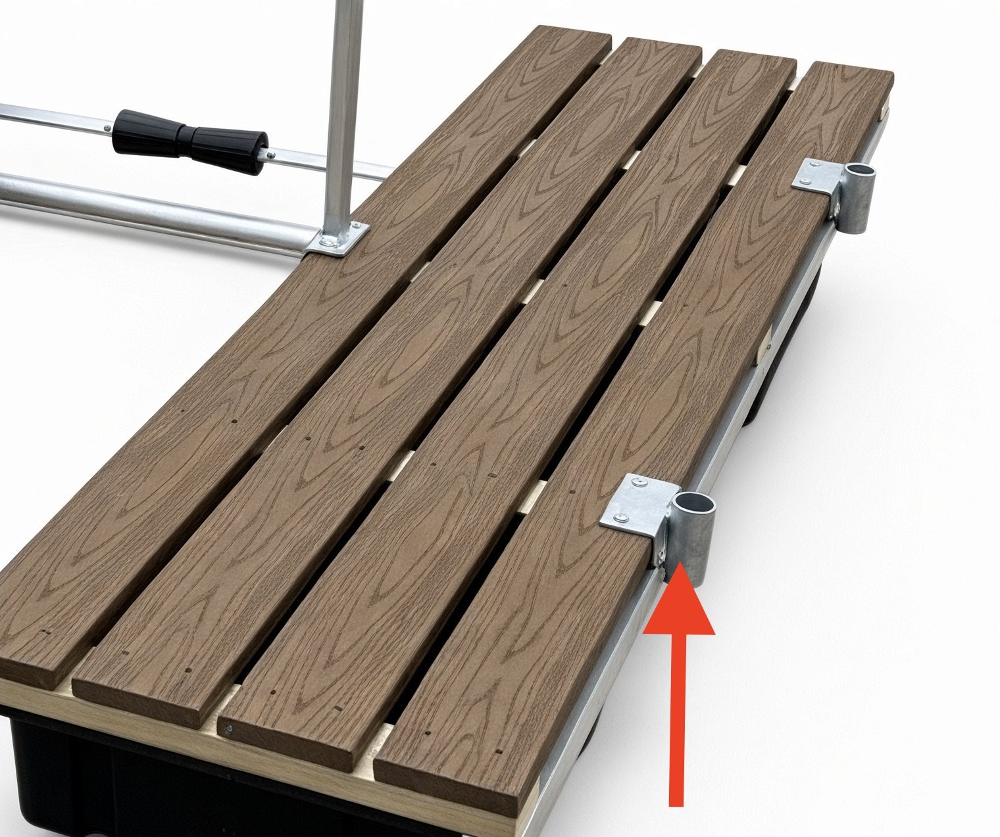

MR. LAUNCHER 2.0
BẾN THUYỀN KAYAK
SÁCH HƯỚNG DẪN LẮP ĐẶT

SÁCH HƯỚNG DẪN LẮP ĐẶT
CẢM ƠN quý khách đã mua bến hạ thuyền kayak Mr. Launcher 2.0!
Vui lòng đọc toàn bộ hướng dẫn và xem các video trợ giúp trước khi bắt đầu.
Video trợ giúp: youtube.com/@amdocks
Thêm hình ảnh và thông tin: www.AmericanMuscleDocks.com
Bến hạ thuyền dùng cho gia đình này nhằm giúp quý khách lên và xuống thuyền kayak dễ dàng hơn.
Bến hạ thuyền kayak dùng cho gia đình này không phải là bến nổi và chỉ nên dùng cho một người mỗi lần. Hãy làm theo hướng dẫn để lắp đặt đúng cách và an toàn.


Bôi mỡ lên ren của bu lông thép không gỉ 3/8 x 4” khi lắp các thanh đỡ ống.
Gắn Thanh Đỡ Ống Nhôm
TRANG 5 2Gắn Thanh Ổn Định Ống Vuông
TRANG 6 3Lắp Tay Nắm Bằng Nhôm
TRANG 7 4Lắp Ổ Đỡ Kandy Kane
TRANG 8
** Các lỗ khoan sẵn đã có trên giá V bằng nhôm, ở vị trí phù hợp nhất để phần lớn thuyền kayak tựa lên con lăn cao su. Một số đáy thuyền kayak có hình dạng khác và có thể cần khoan lỗ mới để dịch giá này lên hoặc xuống. Lực giữ đúng chỉ cần đủ để quý khách lên xuống thuyền mà thuyền không xê dịch quá nhiều. Chúng tôi đặt lỗ ở độ cao thông dụng nhất, phù hợp với phần lớn đáy thuyền kayak, để con lăn giữ được thuyền mà thuyền không trôi đi khi đã cập bến.

Đặt tay nắm bằng nhôm vào chính giữa mặt trong của hai sàn nổi. Tay nắm có các lỗ khoan sẵn ở phía trên và phía dưới (hãy khớp chúng với các lỗ khoan sẵn trên sàn). Nếu các lỗ không thẳng hàng chính xác, quý khách có thể phải nới lỏng một số bu lông của thanh đỡ ống nhôm hoặc thanh ổn định ống vuông đã lắp.

Lắp các ổ đỡ ống lên đoạn bến nổi của quý khách - Đặt ổ đỡ cưỡi lên thanh gỗ đỡ 2x4” phía ngoài để thanh gỗ đó lấp kín khoảng trống giữa mặt sàn và khung nhôm, hoặc dùng một khối gỗ 2x4” để lấp khoảng trống bên dưới giá.
Ổ ĐỠ ỐNG - Dùng (2) bu lông carriage 3/8 x 4” cho mỗi vị trí, bắt từ trên xuống. * Khoan các lỗ này hơi nghiêng ra phía ngoài bến (đừng lo nếu khoan chạm mặt bích gắn phao). Dùng (1) bu lông carriage 3/8 x 1 ¼” ở mặt bên của mỗi vị trí.
GIÁ GẮN SÀN - Xác định vị trí cần khoan rồi gắn các giá sàn Kandy Kane vào kết cấu cố định khác của quý khách, mỗi giá dùng (4) bu lông carriage 1/2 x 3”. Gắn tấm đế càng sát mép mặt sàn càng tốt để có khoảng hở giữa ống và mặt sàn (khoảng hở này giúp các kẹp ống trên bến hạ thuyền trượt lên ống mà không bị kẹt vào bến của quý khách).



Chạm hoặc bấm vào bất kỳ hình ảnh nào để mở toàn màn hình. Bản vẽ kích thước dễ đọc hơn khi phóng to.